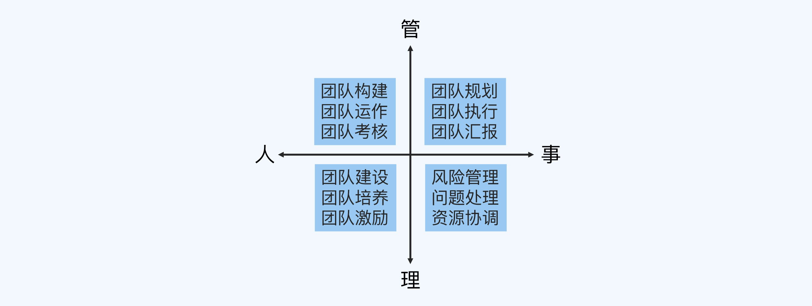
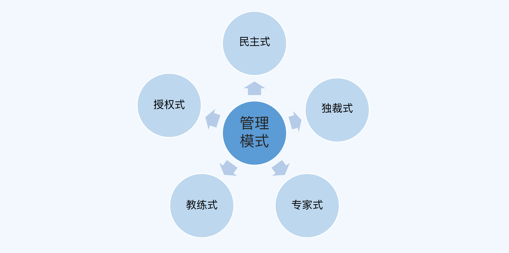

导学
为什么要懂业务
对于技术人员
- 更好的理解需求
- 更好的设计方案
- 更好的做团队规划
为什么要懂管理
如果说理解业务才能创造更好的价值，那么学会管理才能创造更大的价值。
管理真正的作用其实是整合团队的力量，让团队突破单个个体的能力上限，创造出更大的价值。
如何提升管理能力
管理思维框架
管理四象限
可以用来帮助你快速从 0 到 1 地搭建自己的管理视野，明确自己在成为管理者之后要做什么。

管理五模式
以用来帮助你针对不同的场景选择相应的思路，从而达到更好的管理效果。

管理其实是一个很大的范畴，包括企业管理、行政管理、人力资源管理和团队管理等，技术人员需要学习的主要是团队管理。